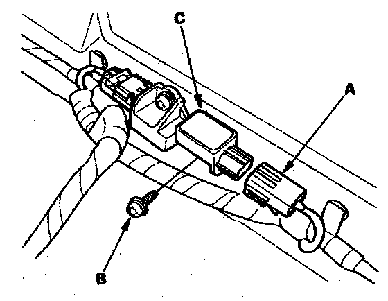

Safing Sensor: Service and Repair
Satellite Safing Sensor ReplacementRemoval
1. Disconnect the negative cable from the battery, and wait at least 3 minutes before beginning work.
2. Disconnect both side curtain airbag 2P connectors.
3. Remove the second row seat.

4. Disconnect the floor wire harness 4P connector (A) from the satellite safing sensor.
5. Remove the TORX bolt (B) using a TORX T30 bit, then remove the satellite safing sensor (C).
Installation

1. Install the new satellite safing sensor with the TORX bolt (A) then connect the floor wire harness 4P connector (B) to the satellite safing sensor (C).
2. Reconnect the negative cable to the battery.
3. After installing the satellite safing sensor, confirm proper system operation: Turn the ignition switch ON (II): the SRS indicator should come on for about 6 seconds and then go off.
4. Install all removed parts.